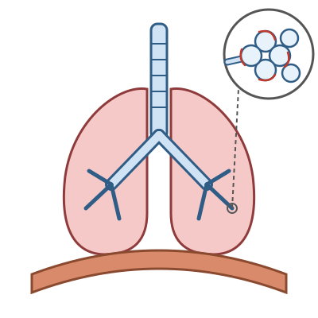

Atmen, Haut und Sinne
Mit einem KI-Tutor lernen
Ein KI-Tutor erklärt dir diese Seite und hilft dir bei den Übungen. Wähl deinen Assistenten:
Mit Claude öffnen Mit ChatGPT öffnen Mit Mistral Vibe öffnen
Du nutzt dein eigenes Konto beim Anbieter. Der Assistent ist kein Angebot von lernapps.net: lernapps liefert nur Inhalte und Übungen. Die Wahl gilt für alle Seiten, nur auf diesem Gerät.
Überblick
Dein Körper nimmt ständig Luft auf, filtert dein Blut und meldet dem Gehirn, was um dich herum passiert. Hier lernst du den Weg der Atemluft, die Aufgaben von Haut und Niere und den Weg eines Reizes zum Gehirn. Dazu kommen Knochen und Muskeln. Eine Zeichnung der Atemwege übst du selbst.
Das solltest du wissen
Lunge und Atmung
Die Luft nimmt diesen Weg: Sie strömt durch den Kehlkopf in die Luftröhre. Die Luftröhre ist bei Erwachsenen 10 bis 12 Zentimeter lang. Knorpelspangen halten sie offen. Feine Härchen schieben Schleim und Staub nach oben. Dann teilt sich die Luftröhre in zwei Hauptbronchien. Sie verzweigen sich in immer kleinere Bronchien. Am Ende liegen die Lungenbläschen.

- A Luftröhre
- B Hauptbronchus
- C Lungenflügel
- D Lungenbläschen
- E Zwerchfell
Die Atemwege im Überblick. Folge dem Weg der Luft von oben nach unten.
Quelle: eigene Zeichnung. Lizenz: CC-BY-4.0.- Lungenbläschen
Lungenbläschen sind winzige Bläschen am Ende der Atemwege. Ihre Wand ist hauchdünn. Hier gelangt Sauerstoff ins Blut, und Kohlenstoffdioxid gelangt aus dem Blut in die Luft.
Gasaustausch: In den Lungenbläschen geht Sauerstoff aus der Luft ins Blut. Das Blut gibt Kohlenstoffdioxid ab, das du ausatmest. Alle Lungenbläschen zusammen haben eine sehr große Fläche, geschätzt 80 bis 120 Quadratmeter.
| Gas | Eingeatmete Luft | Ausgeatmete Luft |
|---|---|---|
| Sauerstoff | etwa 21 % | etwa 17 % |
| Kohlenstoffdioxid | etwa 0,04 % | etwa 4 % |
Die Lunge hat selbst keine Muskeln. Das Zwerchfell ist der wichtigste Atemmuskel. Beim Einatmen zieht es sich zusammen und senkt sich nach unten. Der Brustraum wird größer, und Luft strömt in die Lunge. Der rechte Lungenflügel hat drei Lappen, der linke zwei.
Haut und Niere
Die Haut ist das größte Organ des Menschen. Bei einem Erwachsenen ist sie fast zwei Quadratmeter groß. Sie hat mehrere Aufgaben:
- Sie schützt vor Verletzungen und vor Krankheitserregern.
- Sie hilft, die Körpertemperatur zu halten. Schweiß kühlt, wenn er verdunstet.
- Sie spürt Berührung, Druck, Schmerz und Temperatur.
- Mit Sonnenlicht bildet sie Vitamin D.
Die Haut hat drei Schichten: Oberhaut, Lederhaut und Unterhaut.
Die Nieren filtern das Blut. Du hast zwei Nieren, jede ist etwa 10 bis 12 Zentimeter lang. Aus dem Blut entsteht Harn. Er fließt durch die Harnleiter in die Harnblase. Von dort wird er über die Harnröhre ausgeschieden. Die Nieren regeln auch den Wasserhaushalt des Körpers: Aus rund 180 Litern Primärharn am Tag wird weniger als 2 Liter Urin.
Nerven und Sinne
- Reiz
Ein Reiz ist etwas, das ein Sinnesorgan aufnehmen kann, zum Beispiel Licht, ein Ton oder eine Berührung.
Sinneszellen wandeln einen Reiz in elektrische Signale um. Nervenzellen leiten die Signale zum Gehirn. Dort entsteht der Eindruck, den du wahrnimmst. Das Gehirn schickt auch Befehle über Nerven zu den Muskeln. Gehirn und Rückenmark bilden zusammen das zentrale Nervensystem.
| Sinnesorgan | Reiz |
|---|---|
| Auge | Licht |
| Ohr | Schall |
| Nase | Gerüche |
| Zunge | Geschmack |
| Haut | Berührung, Druck, Temperatur |
Knochen und Muskeln
Ein Erwachsener hat etwas über 200 Knochen. Sie halten den Körper aufrecht und schützen die Organe. In den Knochen sind auch Calcium und Phosphat gespeichert. Das Skelett braucht mehrere Jahre, bis es ausgewachsen ist, etwa bis zum 20. Lebensjahr.
Die Skelettmuskeln bewegen den Körper, zum Beispiel Arme und Beine. Du kannst sie bewusst steuern. Sie sind über Sehnen am Skelett befestigt. Der Herzmuskel ist anders: Du kannst ihn nicht bewusst steuern.
So prüfst du eine „falsch“-Frage zur Atmung
Frage: Welche Aussage ist falsch?
- A: Beim Einatmen senkt sich das Zwerchfell.
- B: Die Lunge saugt die Luft mit eigenen Muskeln ein.
- C: Sauerstoff geht in den Lungenbläschen ins Blut.
Lösung durch Denken: Zwei Aussagen stimmen, eine nicht. Prüfe jede einzeln. A stimmt: Das Zwerchfell zieht sich zusammen und senkt sich. C stimmt: Dafür sind die Lungenbläschen da. B passt nicht. Die Lunge hat keine Muskeln, das Zwerchfell und die Muskeln zwischen den Rippen bewegen sie. B ist also falsch und damit die gesuchte Antwort.
Übung
Übung
Lösung
Richtige Antwort: A – Luftröhre; B – Hauptbronchus; C – Lungenflügel; D – Lungenbläschen; E – Zwerchfell
Die Luftröhre ist das lange Rohr oben und teilt sich in die Hauptbronchien. Die Lungenflügel sind die großen Flächen. Im vergrößerten Kreis siehst du die Lungenbläschen. Unter den Lungen liegt das Zwerchfell, der wichtigste Atemmuskel.
Mehr dazu:
Übung
Lösung
Beim Einatmen senkt sich das Zwerchfell.
Das stimmt. Das Zwerchfell zieht sich zusammen und senkt sich. So wird der Brustraum größer.
Die ausgeatmete Luft enthält mehr Kohlenstoffdioxid als die eingeatmete Luft.
Das stimmt. Eingeatmet sind es etwa 0,04 Prozent, ausgeatmet etwa 4 Prozent.
Die Lunge zieht die Luft mit eigenen Muskeln ein. richtige Antwort
Das ist falsch. Die Lunge hat keine eigenen Muskeln. Das Zwerchfell und die Zwischenrippenmuskeln bewegen sie.
Die Lunge enthält keine Muskeln. Das Zwerchfell und die Muskeln zwischen den Rippen sorgen für die Bewegung.
Mehr dazu:
Übung
Lösung
Richtige Antwort: 1. Kehlkopf, 2. Luftröhre, 3. Bronchien, 4. Lungenbläschen
Die Luft strömt vom Kehlkopf durch die Luftröhre. Diese teilt sich in die Bronchien, die zu den Lungenbläschen führen. Nur dort geht Sauerstoff ins Blut.
Mehr dazu:
Übung
Lösung
Sie filtern das Blut und bilden Harn. richtige Antwort
Die Nieren filtern das Blut und bilden daraus den Harn. Sie regeln auch den Wasserhaushalt des Körpers.
Sie nehmen Sauerstoff aus der Luft auf.
Sauerstoff wird in den Lungenbläschen aufgenommen. Die Nieren liegen weit weg von den Atemwegen.
Sie wandeln Reize in Nervensignale um.
Das machen die Sinneszellen in den Sinnesorganen, zum Beispiel im Auge. Die Nieren sind kein Sinnesorgan.
Die Nieren filtern das Blut. Aus etwa 180 Litern Primärharn am Tag entsteht weniger als 2 Liter Urin.
Mehr dazu:
Übung
Lösung
Richtige Antwort: Die Aussage stimmt.
Die Haut ist bei einem Erwachsenen fast zwei Quadratmeter groß und das größte Organ. Sie schützt den Körper, hilft bei der Temperatur und spürt Berührungen.
Mehr dazu:
Übung
Lösung
Sinneszellen im Ohr wandeln den Reiz in Signale um, Nervenzellen leiten sie zum Gehirn. richtige Antwort
So läuft es bei allen Sinnen. Sinneszellen machen aus dem Reiz elektrische Signale, und Nervenzellen leiten sie ans Gehirn.
Das Blut trägt den Knall zum Gehirn.
Das Blut transportiert zum Beispiel Sauerstoff, Nährstoffe und Hormone. Reize leiten die Nerven weiter.
Die Muskeln leiten den Knall zum Gehirn.
Muskeln bewegen den Körper. Ihre Befehle bekommen sie vom Gehirn über Nerven.
Reize werden von Sinneszellen in elektrische Signale umgewandelt. Nervenzellen leiten sie zum Gehirn.
Mehr dazu: